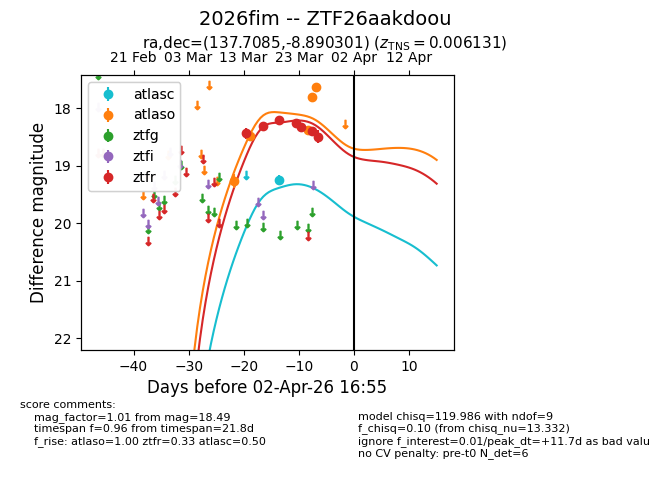
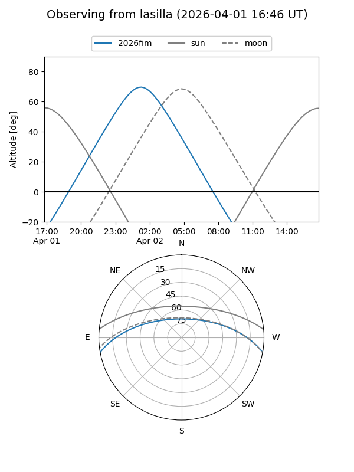
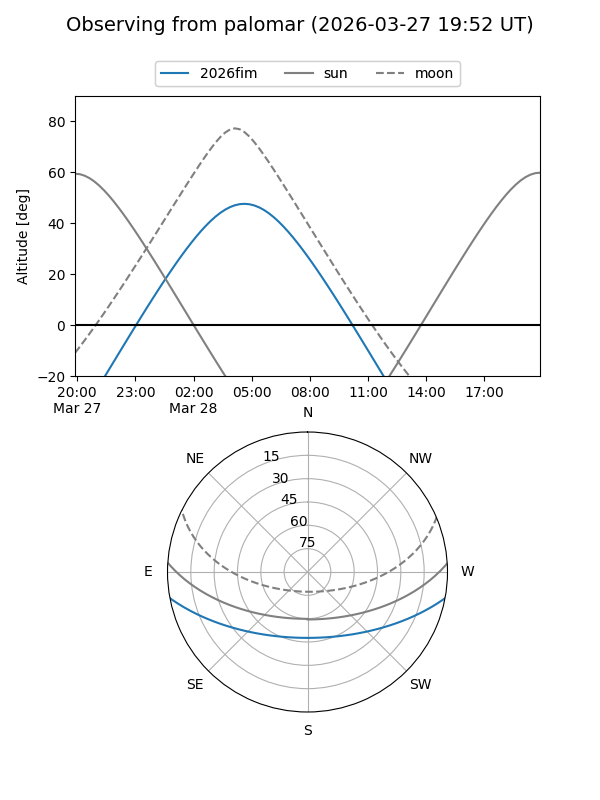
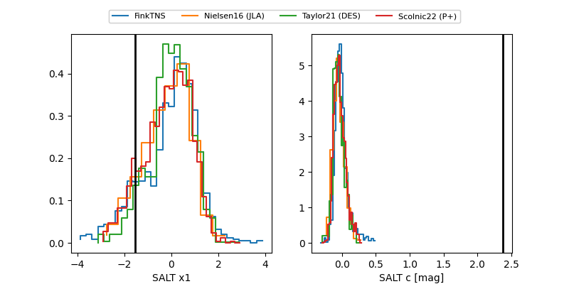

2026fim
Target 2026fim at 2026-04-02 16:59
Aliases and brokers:
FINK: link
Lasair: link
ALeRCE: link
TNS: link
YSE: link
alt names
ZTF26aakdoou (ztf,fink_ztf)
2026fim (tns,yse)
Coordinates:
equatorial (ra, dec) = 137.7085,-8.89030
equatorial (HMS+DMS) = 09:10:50.05,-08:53:25.08
galactic (l, b) = (238.9042,+25.59297)
Flags:
Photometry:
last atlasc=19.25, atlaso=17.62, ztfr=18.49
1 atlasc, 5 atlaso, 7 ztfr detections
Lightcurve

Visibility


Additional plots
